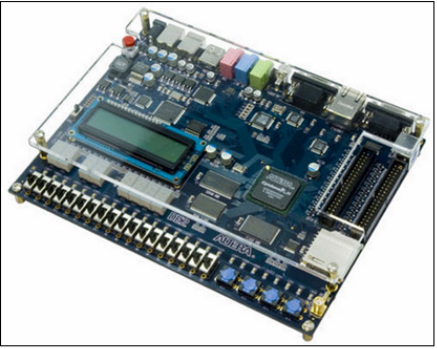

Media player system
Code: github repository
Designed and implemented a media player system in 'C'. The system was capable of playing different songs at normal, double and half speed. This was implemented using a combination of polling, synchronization, timers and interrupt handlers to interface with the devices (Push buttons, LEDs , Switches) on the Altera DE2 board. NIOS II IDE was used for development.
Functions: Play (Normal speed), Stop, Reverse, Forward (double speed), Half Speed, Delay
Designed and implemented a media player system in 'C'. The system was capable of playing different songs at normal, double and half speed. This was implemented using a combination of polling, synchronization, timers and interrupt handlers to interface with the devices (Push buttons, LEDs , Switches) on the Altera DE2 board. NIOS II IDE was used for development.
Functions: Play (Normal speed), Stop, Reverse, Forward (double speed), Half Speed, Delay

Altera DE2 Development and Education Board
lab1
| project_part1.c |
PHASE1
Phase1 required the interfacing between the push button, DIP switches, LEDs and seven segment displays. The aim was to simultaneously allow a user to light an LED or seven segment display depending on which switches were active, and which buttons were pressed.
Two ISR's were created for implementing the functionality in phase1: the timer ISR, and the button ISR. The button ISR is initialized at the start of the program, and an interrupt is generated upon a button press. Whenever a button is pressed, the interrupt handler checks whether or not the first or second buttons are pressed, and stores this value into a global variable. The first and second button corresponds to LED-activation, or seven-segment display activation, respectively. If either button is pressed, the ISR will do three things: store the status of the first 8 DIP switches into a global variable, set a global variable known as timer_count to 0, initialize the timer to start sending timer interrupts every second. The timer ISR, once set, will handle an interrupt every second. During each interrupt, a global variable (denoted as timer_flag) will flag on.
The LEDs and seven-segment displays are activated in the main function in conjunction with the ISRs. The main function will loop until either button 1 or 2 has been flagged as pressed. Once button 1 or 2 has been pressed, the main function will then loop until timer_count equals 8. Each time the timer_flag is detected to be true, the function will do the following:
- Set timer_flag to be false
- Increment timer_count
- Check to see which buttons have been pressed
- Check the value of btn1_count
If the value is not 8
If the value is not 8
Once timer_count is 8, the code will deactivate the timer. This code is thus sufficient to service the LEDs and seven-segment displays depending on which buttons are pushed and which switches are active. Note that this code sufficiently handles the use cases of when buttons are pressed “multiple” times during servicing, or if the switches are changed during servicing.
SYNCHRONIZATION METHODS
For phase1, a background task must occur (monitoring switch states for processing the LEDs/display). If buttons are pushed, they must be serviced right away, and this will immediately affect the background task. Upon pressing a button, the state of the active switches will be stored immediately.
Knowing the above information, the best button synchronization method needs to be defined to be the one that: (1) minimizes missed button pushes, (2) minimizes it’s effect on the background task when a button is not pushed, and (3) services button pushes as quickly as possible. Because switch synchronization occurs whenever a button is pressed, the best synchronization method was solely be determined based on button synchronization performance. Of the synchronization methods in question (blind polling, periodic polling, occasional polling, busy waiting, and interrupts), interrupts performed the best when synchronizing between buttons.
Advantages of using Interrupts:
- Reset the edge capture register by writing a value to it
- Enable the interrupts for button1 and button2
- Implement the Interrupt Service Routine keeping it short and simple for better performance
Disadvantages of using Interrupts:
To summarize, interrupts are advantageous because they avoid missed button presses, do not affect the background task when data is not available, and minimize latency as seen by the device. Interrupts are also fairly easy to implements, as one must simply initialize an ISR. However, Interrupts are much more difficult to debug as interrupts are much more device-oriented as opposed to CPU oriented.
PHASE2
The goal of phase II of lab1 was to design an experiment to compare two different synchronization methods to respond to a pulse generated by an EGM. Two synchronization methods used by our group were Interrupts and periodic polling. The main objective in both cases was to minimise the number of missed pulses.
Each of the two methods were tested and analysed and it was found that the approach to use interrupts gives an overall better performance as compare to Periodic polling (specially with respect to our lab obejective i.e., minimizing the number of missed pulses). This is because it reduces the missed pulses to zero and provides for higher number of background tasks processed. Moreover, the maximum latency is also lower and more consistent for interrupts than it is for polling.
Results Obtained:
i) The fractional value of max Latency expressed is a fraction of the period e.g, 81 / 1024th(s) refers to 81 / 1024th(s) of a period.
ii) Tasks refers to the total background task units processed
Phase1 required the interfacing between the push button, DIP switches, LEDs and seven segment displays. The aim was to simultaneously allow a user to light an LED or seven segment display depending on which switches were active, and which buttons were pressed.
Two ISR's were created for implementing the functionality in phase1: the timer ISR, and the button ISR. The button ISR is initialized at the start of the program, and an interrupt is generated upon a button press. Whenever a button is pressed, the interrupt handler checks whether or not the first or second buttons are pressed, and stores this value into a global variable. The first and second button corresponds to LED-activation, or seven-segment display activation, respectively. If either button is pressed, the ISR will do three things: store the status of the first 8 DIP switches into a global variable, set a global variable known as timer_count to 0, initialize the timer to start sending timer interrupts every second. The timer ISR, once set, will handle an interrupt every second. During each interrupt, a global variable (denoted as timer_flag) will flag on.
The LEDs and seven-segment displays are activated in the main function in conjunction with the ISRs. The main function will loop until either button 1 or 2 has been flagged as pressed. Once button 1 or 2 has been pressed, the main function will then loop until timer_count equals 8. Each time the timer_flag is detected to be true, the function will do the following:
- Set timer_flag to be false
- Increment timer_count
- Check to see which buttons have been pressed
- if button 1 was pressed, store the current active DIP switches as button1_switches, and set a button 1 count to be 0 (denoted as btn1_count).
- if button 2 was pressed, store the current active DIP switches as button2_switches, and set a button 2 count to be 0 (denoted as btn2_count).
- Check the value of btn1_count
If the value is not 8
- Determine the button1_switches value that corresponds to the btn1_count
- If 1, set LED1 to be on.
- If 0, set LED1 to be off.
- Increment btn1_count
- Turn off LED1
If the value is not 8
- Determine the button2_switches value the corresponds to the btn2_count
- If 1, set the seven-segment display to be on.
- If 0, set the seven segment display to be off.
- Increment btn1_count
- Turn off seven segment display
Once timer_count is 8, the code will deactivate the timer. This code is thus sufficient to service the LEDs and seven-segment displays depending on which buttons are pushed and which switches are active. Note that this code sufficiently handles the use cases of when buttons are pressed “multiple” times during servicing, or if the switches are changed during servicing.
SYNCHRONIZATION METHODS
For phase1, a background task must occur (monitoring switch states for processing the LEDs/display). If buttons are pushed, they must be serviced right away, and this will immediately affect the background task. Upon pressing a button, the state of the active switches will be stored immediately.
Knowing the above information, the best button synchronization method needs to be defined to be the one that: (1) minimizes missed button pushes, (2) minimizes it’s effect on the background task when a button is not pushed, and (3) services button pushes as quickly as possible. Because switch synchronization occurs whenever a button is pressed, the best synchronization method was solely be determined based on button synchronization performance. Of the synchronization methods in question (blind polling, periodic polling, occasional polling, busy waiting, and interrupts), interrupts performed the best when synchronizing between buttons.
Advantages of using Interrupts:
- Avoid Missed Cycles: Interrupts avoid missed cycles. All variants of polling (with the exception of busy waiting) run the risk of an unnoticed button push, depending on the frequency of polling. This, with respect to phase 1’s task, is simply unacceptable. This is because the program’s functionality is largely based on its responsiveness to button pushes.
- Background Task Performance: Interrupts also provide the best performance with regard to the background task. When a button is not pressed, the program should cycle through the stored switch values, and light the LEDs or displays as appropriate. Thus it is important that synchronization should not interfere with the process, especially since this operates on a timed basis. This makes interrupts advantageous, as the background task will only be affected when a button is pressed.
- Ease of Implementation: Interrupt implementation was relatively straightforward and was done by following steps:
- Reset the edge capture register by writing a value to it
- Enable the interrupts for button1 and button2
- Implement the Interrupt Service Routine keeping it short and simple for better performance
Disadvantages of using Interrupts:
- Ease of testing and debugging: Interrupts are generally difficult to debug as interrupts are much more device-oriented as opposed to CPU oriented. While a debugger still could have been used in this case (as the code is simulated on hardware), one runs the risk of the program performing inaccurately as the program is stopped at each breakpoint which can potentially affect the performance. Thus, testing of the interrupt service routine was not easy. The Interrupt service routine was kept short and simple for better performance and was tested by using printf() statements and then running the program to make sure that the program was going through the ISR and printing the contents of the printf() statements on the console. Though it is not recommended to have printf() statements in the ISR since they slow down the ISR, it is still one way of quickly verifying whether the ISR is setup correctly.
- Longer latency as seen by the CPU: Interrupts may suffer longer latency (as seen by the cpu) when it comes to data transfer. Busy waiting, occasional polling, and periodic polling, for example, can be designed to minimize latency as seen by the CPU. However, interrupts compensate this with the fact that interrupts provide a reliable means of detecting button pushes, while allowing the background task to run largely unaffected.
To summarize, interrupts are advantageous because they avoid missed button presses, do not affect the background task when data is not available, and minimize latency as seen by the device. Interrupts are also fairly easy to implements, as one must simply initialize an ISR. However, Interrupts are much more difficult to debug as interrupts are much more device-oriented as opposed to CPU oriented.
PHASE2
The goal of phase II of lab1 was to design an experiment to compare two different synchronization methods to respond to a pulse generated by an EGM. Two synchronization methods used by our group were Interrupts and periodic polling. The main objective in both cases was to minimise the number of missed pulses.
Each of the two methods were tested and analysed and it was found that the approach to use interrupts gives an overall better performance as compare to Periodic polling (specially with respect to our lab obejective i.e., minimizing the number of missed pulses). This is because it reduces the missed pulses to zero and provides for higher number of background tasks processed. Moreover, the maximum latency is also lower and more consistent for interrupts than it is for polling.
Results Obtained:
i) The fractional value of max Latency expressed is a fraction of the period e.g, 81 / 1024th(s) refers to 81 / 1024th(s) of a period.
ii) Tasks refers to the total background task units processed
Conclusion: Interrupts provide a better overall performance as compared to polling for achieving our design objectives.
lab2
| project_part2.c |
The goal of lab2 was to build up on lab1 in order to implement a media player system. The figure below gives a visual representation of how our code was structured:
The ‘ISR Section’ of our code is responsible for servicing Altera DE2 button interrupts. This is achieved through the Button_ISR method. The Button_ISR method identifies which buttons were pressed, and toggles the appropriate global flags true or false depending on which buttons were pressed. For example, our code has 4 main global flags: play, stop, next_song, and previous_song. If the next button is pressed, then the next_song flag is toggled true while the rest are toggled false. These flags integrate with the main section our code, allowing users to control the media player depending on which buttons are pressed.
The ‘Media Control’ section is responsible for initializing the media controller, building song clusters, and controlling media player functionality (next, previous, stop, and play). The init method is responsible for initializing the required hardware for future use. For example, this function initializes the SD card, the MBR, the BS, the audio codec, and the LCD. Next, the buildCluster method builds a song cluster for the next song in the list. This cluster is stored as a global structure. Finally, our control method determines whether the media player is to play, stop playing, or toggle songs. This method essentially busy waits until a play, next, or previous flag is set through the button_ISR. When a button is pressed, the program will exit this busy loop, and perform the action that is associated by the flag that was just set.
The ‘Play Options’ section is comprised of the 5 methods: normal_speed, double_speed, half_speed, reverse, and delay_channel. Each of these methods initially call upon the buildCluster method to store the cluster of the current song. The code then cycles through each cycle, and then cycles through the cluster’s bytes. These bytes are then manipulated as required by the method, and then sent to the audio codec for audio playback. For example, normal speed will send all bytes to the audio codec from start to finish, whereas reverse play will send the bytes to the audio codec in a reversed order. As a side note, these methods will only function if the play flag is true. If at any moment the stop function flags on, the code will immediately break and stop playing.
Finally, the main section consists of the main method. This section will call upon the init() function to initialize the hardware. The main method will default to the control method, which busy loops until a button is pressed. Upon pressing a button, the busy loop will break, and the main loop will read which switches are high. Depending on which switches are high, the main loop will call upon the appropriate play method and loop back to the media control method upon finishing. Through this structure, the user is able to toggle songs and play/pause at their desire.
Issues that Impacted the Audio Playback Performance
The .wav files to be played were divided into sectors which were further split up into clusters. In general for all modes, following were taken into consideration to enhance the audio playback performance:
Double Speed: For playing the song at the double speed, 2 out of every four channels were skipped. In this mode, the while loop which iterates over the different sectors in the song takes approximately half of the time to execute (as compared to the normal case) since we are skipping some channels. This implies that the SD card is required to supply data (for successive sectors) at a much faster rate.
Half Speed: For this mode, the same channels were played twice to produce the half speed effect. For this mode, it was not possible to achieve the play speed which was exactly half of the normal play mode . This might have been due to the performance issues related to the rate of data access from the SD card and the limitation on the efficiency of the audio codec player.
Delay Mode: For the delay mode, a one second delay was caused between the right and left channels.
It was difficult to verify that the delay caused between the two channels was exactly one second by simply listening to the audio.Moreover, for the case when a particular sector is finished, there are still some right channels left to be executed. Initially these remaining right channels were being missed and thus the audio sounded cut-off at the end. On reiterating through our logic we found that we needed to play the left over right channels after each sector (left channels) have been played. This was achieved by implementing two while loops – One to play the remaining channels in the current cycle through the circular buffer and the other loop to play the recently copied right channels starting from the zero of the circular buffer up-till the current position of the counter.
Reverse Mode: This was implemented by playing the sectors in the opposite direction. After the initial implementation, it was found that the sound didn’t appear like the reversed song. Hence the logic was reworked and it was found that I was reversing the channels but not the sectors. The sectors were still being executed from the beginning till the end. This was fixed quickly by changing the starting value of the sector followed by successively decrementing the sectors for each iteration
The ‘Media Control’ section is responsible for initializing the media controller, building song clusters, and controlling media player functionality (next, previous, stop, and play). The init method is responsible for initializing the required hardware for future use. For example, this function initializes the SD card, the MBR, the BS, the audio codec, and the LCD. Next, the buildCluster method builds a song cluster for the next song in the list. This cluster is stored as a global structure. Finally, our control method determines whether the media player is to play, stop playing, or toggle songs. This method essentially busy waits until a play, next, or previous flag is set through the button_ISR. When a button is pressed, the program will exit this busy loop, and perform the action that is associated by the flag that was just set.
The ‘Play Options’ section is comprised of the 5 methods: normal_speed, double_speed, half_speed, reverse, and delay_channel. Each of these methods initially call upon the buildCluster method to store the cluster of the current song. The code then cycles through each cycle, and then cycles through the cluster’s bytes. These bytes are then manipulated as required by the method, and then sent to the audio codec for audio playback. For example, normal speed will send all bytes to the audio codec from start to finish, whereas reverse play will send the bytes to the audio codec in a reversed order. As a side note, these methods will only function if the play flag is true. If at any moment the stop function flags on, the code will immediately break and stop playing.
Finally, the main section consists of the main method. This section will call upon the init() function to initialize the hardware. The main method will default to the control method, which busy loops until a button is pressed. Upon pressing a button, the busy loop will break, and the main loop will read which switches are high. Depending on which switches are high, the main loop will call upon the appropriate play method and loop back to the media control method upon finishing. Through this structure, the user is able to toggle songs and play/pause at their desire.
Issues that Impacted the Audio Playback Performance
The .wav files to be played were divided into sectors which were further split up into clusters. In general for all modes, following were taken into consideration to enhance the audio playback performance:
- Ensured that the FIFO is empty , before writing data (bytes) to the codec while ( IORD( AUD_FULL_BASE, 0)) {}
- Used a buffer to store all the clusters within a particular sector in order to avoid latency in retrieving data for each cluster separately and then playing the song [ get_rel_sector( &df, buffer, cc, sector++) ].
Double Speed: For playing the song at the double speed, 2 out of every four channels were skipped. In this mode, the while loop which iterates over the different sectors in the song takes approximately half of the time to execute (as compared to the normal case) since we are skipping some channels. This implies that the SD card is required to supply data (for successive sectors) at a much faster rate.
Half Speed: For this mode, the same channels were played twice to produce the half speed effect. For this mode, it was not possible to achieve the play speed which was exactly half of the normal play mode . This might have been due to the performance issues related to the rate of data access from the SD card and the limitation on the efficiency of the audio codec player.
Delay Mode: For the delay mode, a one second delay was caused between the right and left channels.
It was difficult to verify that the delay caused between the two channels was exactly one second by simply listening to the audio.Moreover, for the case when a particular sector is finished, there are still some right channels left to be executed. Initially these remaining right channels were being missed and thus the audio sounded cut-off at the end. On reiterating through our logic we found that we needed to play the left over right channels after each sector (left channels) have been played. This was achieved by implementing two while loops – One to play the remaining channels in the current cycle through the circular buffer and the other loop to play the recently copied right channels starting from the zero of the circular buffer up-till the current position of the counter.
Reverse Mode: This was implemented by playing the sectors in the opposite direction. After the initial implementation, it was found that the sound didn’t appear like the reversed song. Hence the logic was reworked and it was found that I was reversing the channels but not the sectors. The sectors were still being executed from the beginning till the end. This was fixed quickly by changing the starting value of the sector followed by successively decrementing the sectors for each iteration